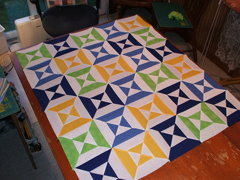
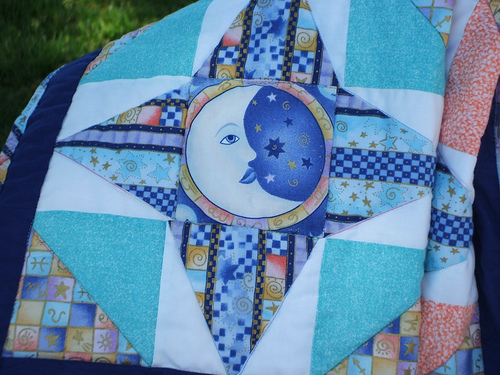

We currently have over ninety active guild members of all experience levels Get Directions

We Welcome Visitors! Come Meet Us Before You Join
We meet on the 2nd Monday of the month at Good Samaritan Lutheran Church at 20850 Langley Rd in Lexington Park MD. We start to gather at 6:30 p.m. and the meeting starts at 7:00 p.m.A typical meeting includes:
Programs
Programs include guest speakers about an aspect of quilting, trunk shows of beautiful quilts, parties, and quilting demonstrations.Show & Tell
Bring your latest creation, project or quilt story to share and get the praise you deserve. Viewing others’ handiwork will inspire you and offer an opportunity to learn from others.Block of the Month
Block of the Month patterns are handed out in the monthly meeting and are also included in the newsletter. These patterns give you an opportunity to sharpen your skills. When you make the block of the month (or several blocks) you are entered in the drawing for that month's blocks. The lucky winner takes home all the blocks! Possibly enough for an entire quilt top!Monthly Drawings
There are monthly door prize drawings, name tag drawing – wear your name tag for an addition chance to win a prize, Also we have a “Monthly Mini” raffle – a member will donate a small, quilted item that is raffled off each meeting.Membership has its perks!
Your annual membership fee includes: Opportunity to Participate in Guild Activities, such as:- Workshops throughout the year by guild members and professionals in the industry
- Bus trips to regional quilt show(s)
- Quilt retreat(s) locally
- Sewing Saturdays at our local library
Newsletter
As a member of the PRQG you will receive our monthly newsletter that includes helpful tips, block of the month pattern, committee input, calendar of events and general guild information.Membership Directory
Members receive a copy of our yearly membership directory to help you stay in touch with other quilters.Committee Opportunities
Our Executive Board and committees plan activities throughout the year. Your participation is always welcome and encouraged. By joining committees you keep the guild strong. Opportunities include: - Hospitality
- Membership
- Block of the Month
- Librarian
- Monthly Mini
- Sunshine
- Philanthropy
- Historian
- Newsletter
- Opportunity Quilt
- Publicity
Most importantly, Pax River Quilters Guild is an opportunity for people with similar interest to come together as a family to share ideas, support each other, learn more about quilting and to help our community with philanthropic efforts.
Meeting are held the second Monday of the month, 6:30pm at Good Samaritan Lutheran Church. Get Directions Here